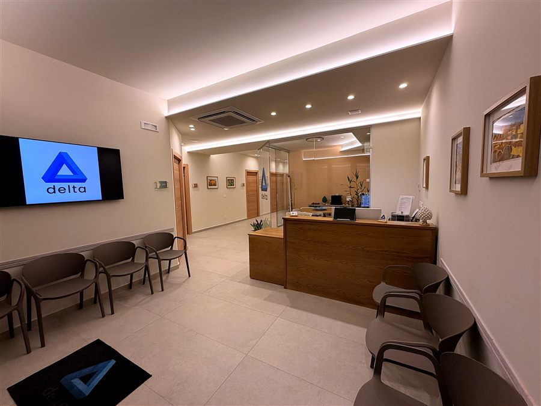
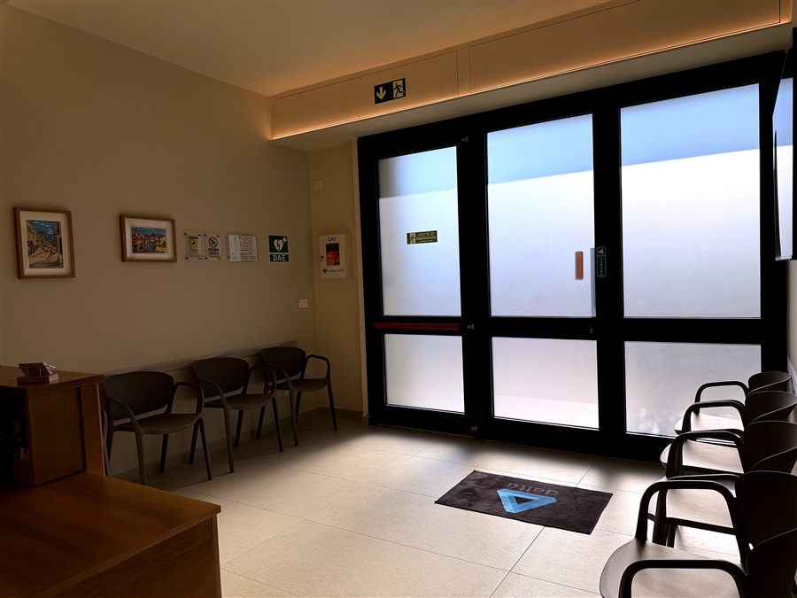
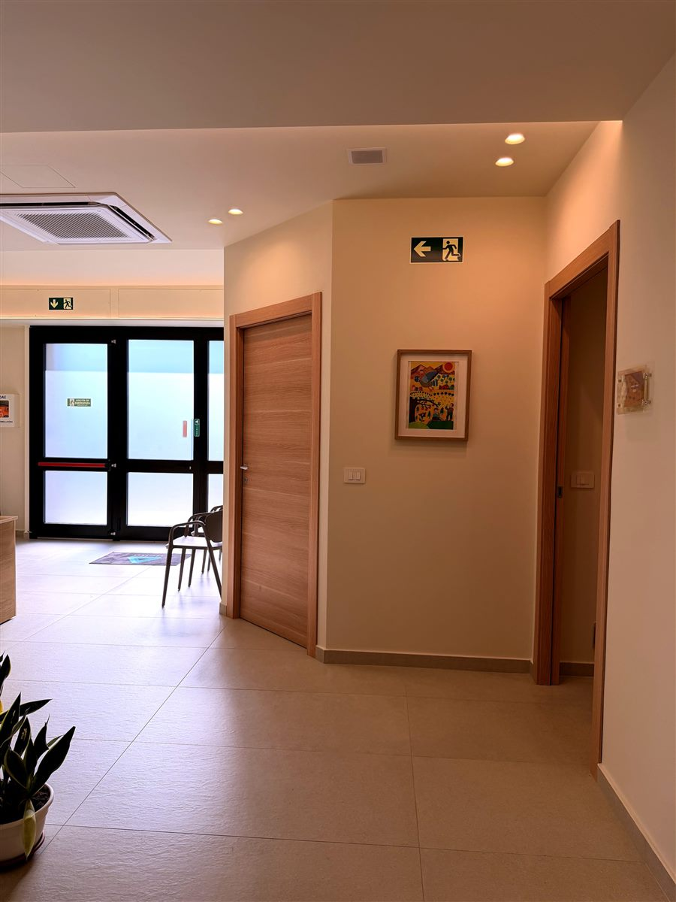
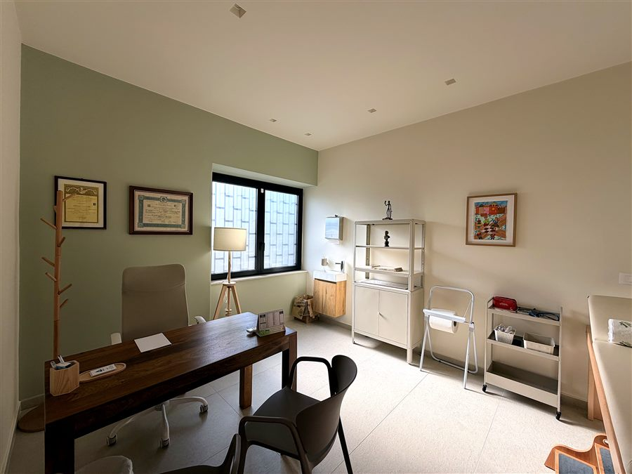
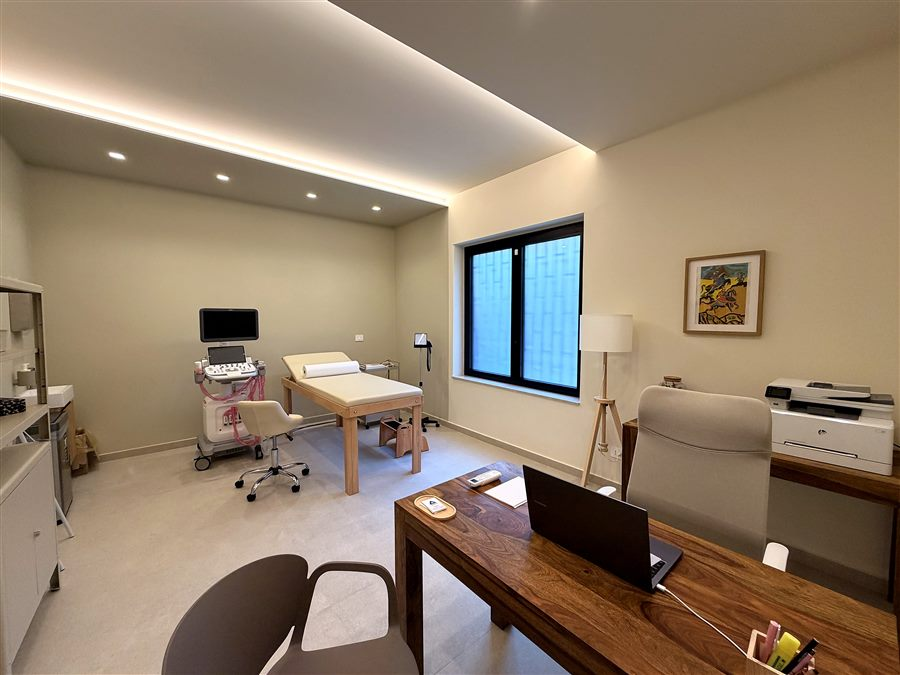
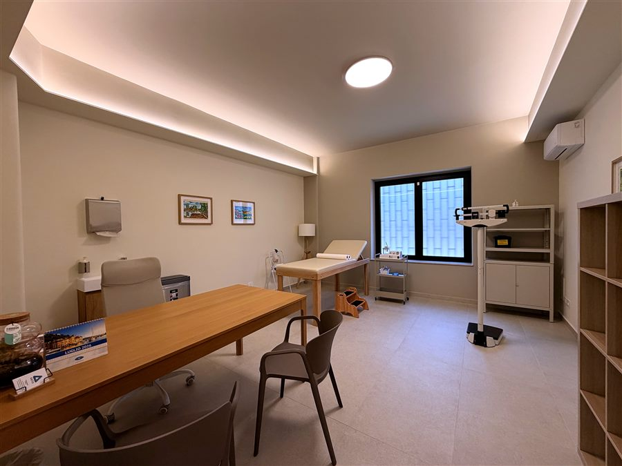
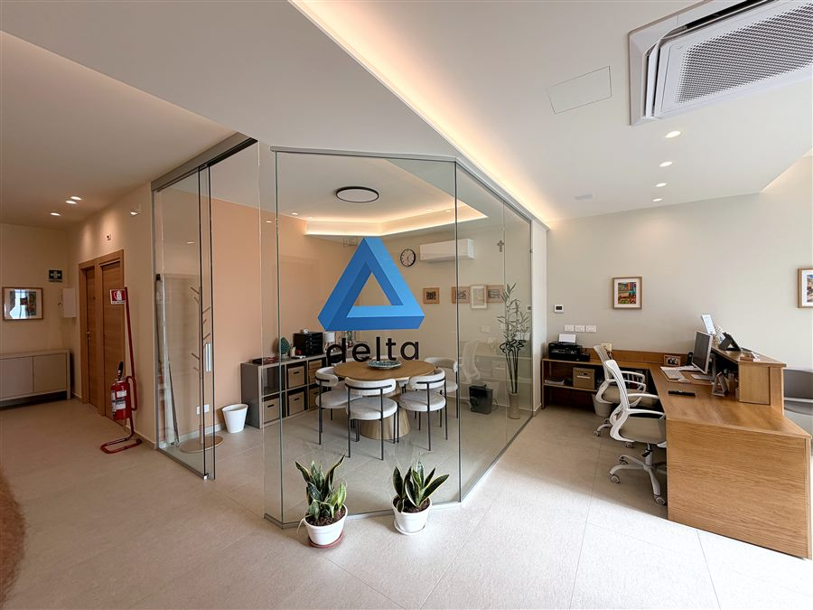

Ambienti pensati per il comfort e l'accessibilità, in una posizione centrale e facile da raggiungere.
Il Poliambulatorio Delta si trova in Viale Marco Polo 2, a Catania: sale d'attesa confortevoli, ambulatori dedicati a ciascuna specialistica e percorsi interni studiati per l'accessibilità.

Ingresso e reception
Sala d'attesa
Corridoio
Ambulatorio "Ippocrate"
Ambulatorio "Igea"
Ambulatorio "Panacea"
Sala riunioniLa filosofia progettuale nasce dalla volontà di superare il classico ambiente ambulatoriale, creando uno spazio più domestico, accogliente e rassicurante. La palette, ispirata ai colori della terra — argilla, terracotta e salvia — si integra con materiali naturali come il rovere e il vetro, calibrati per creare un equilibrio tra calore, leggerezza e luminosità. L'obiettivo è trasmettere una sensazione di serenità e relax, favorendo un approccio più disteso alla visita e un ambiente percepito come familiare e affine alla persona.
Un parcheggio dedicato è disponibile proprio accanto alla struttura, in Viale Marco Polo: dall'area sosta si accede al condominio tramite una comoda scala interna.
Ingresso privo di barriere architettoniche e ambulatori raggiungibili senza ostacoli, per garantire l'accesso a tutti i pazienti.
Organizziamo gli appuntamenti per evitare le attese in sala, rispettando il tempo di ogni paziente.
Tutti gli ambulatori si trovano nello stesso edificio: comodo per chi ha bisogno di più visite in sinergia tra loro.
Una posizione centrale e ben collegata, facilmente raggiungibile sia in auto che con i mezzi pubblici.